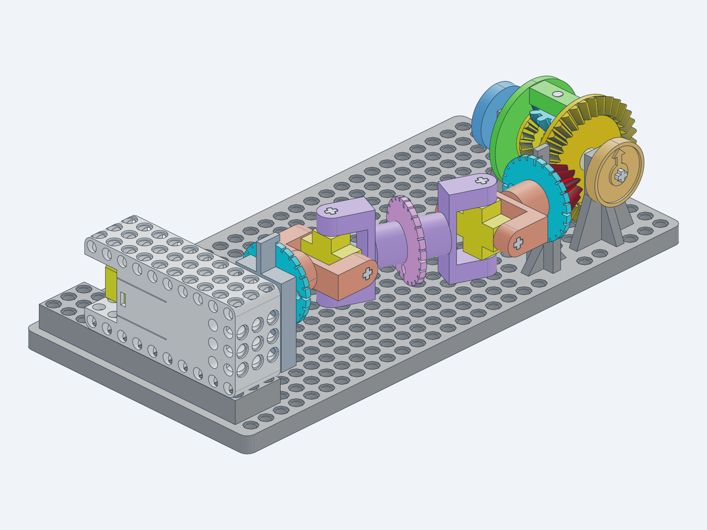
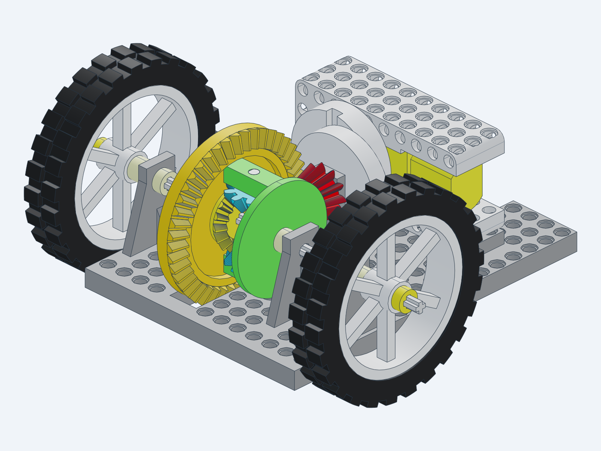
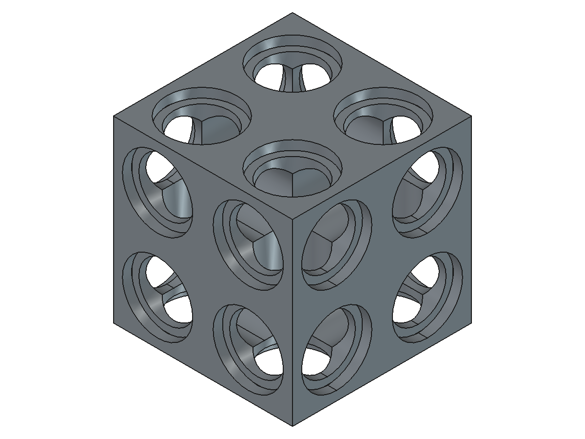
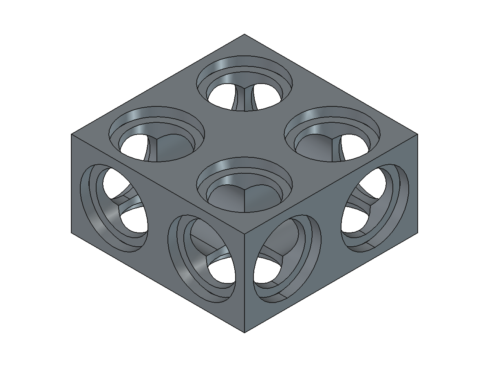
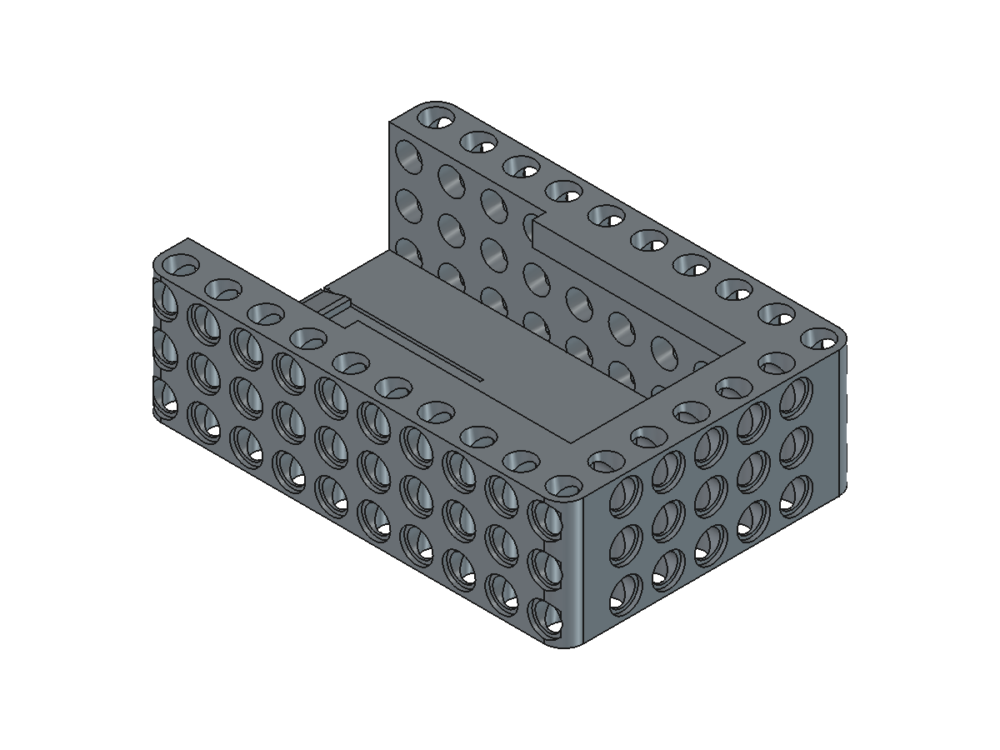
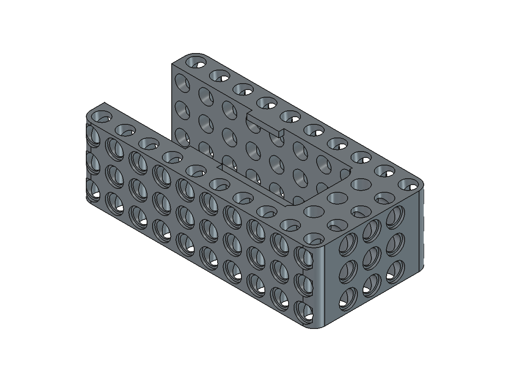
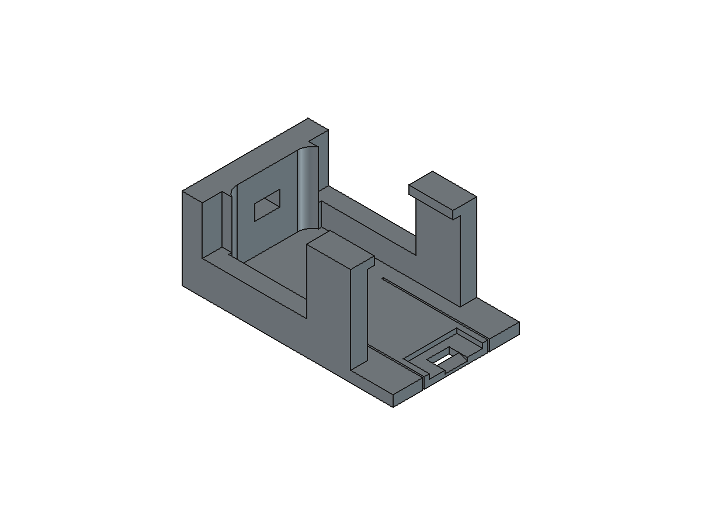

萬向接頭教學模組（TT 馬達＋雙萬向接頭＋差速器）
用來講解萬向接頭的教學模組：TT 馬達放在中線上，「開放式差速器教學模型」的小齒輪軸卻在中線右邊 23.5 mm，兩軸平行錯開，用兩個自印的放大版萬向接頭排成 Z 型接起來。中間軸、馬達軸、輸入軸上都有指針盤，可以看到中間軸忽快忽慢、輸出卻和馬達同步；把中間軸一端的叉子轉 90° 再裝，就能示範錯相時轉速波動加倍。馬達有 4 個位置可換，夾角 22.8°～40.3°。

差速器＋十字滑塊聯軸器＋TT 馬達（驅動模組）
從「差速轉向車」獨立出來的驅動模組：TT 馬達橫放在底板正中，馬達軸和差速器輸入軸平行錯開 12 mm，用自己設計的三件式十字滑塊（Oldham）聯軸器接起來，轉速 1:1，再經 11：44 傘齒輪減速 4 倍帶動差速器和兩個 LEGO 機車輪。可以單獨組裝、通電測試；附 3D 動畫頁示範組裝，以及運轉時滑塊怎麼沿小圓繞。

雙 18650 電池盒 Technic 底座
放兩節並排 18650 電池盒（2S 7.4 V）的 Technic 底座：槽 76 × 42.6 mm，框 13 × 9 × 3 格，和麵包板底座一樣大，底面的孔全部對得上，可以背對背用 LEGO 銷接在一起。

18650 電池盒 Technic 底座
仿「麵包板 Technic 底座」：把單節 18650 電池盒嵌進 76 × 21.3 mm 的槽，槽四角各有 5 × 2 mm 出線口；框是 13 × 5 × 2 格（長、高都和麵包板底座相同），上、下、四周都能用銷接到 LEGO Technic 結構上。

SG90／MG90S 舵機臂（參數化重建）
把一組 CC0 授權的舵機臂（單臂、雙臂、十字臂）從網格量測後，用 FreeCAD 參數化重建；齒孔、臂長、孔距都能在參數表裡改。

差速轉向車模型（電動差速器＋MG90S 轉向）
把「電動差速器」放到後軸、「MG90S 前輪轉向」放到前軸，組成一台 LEGO Technic 相容的四輪車。2026-11-25 以「簡單、好組裝」重新設計：只印一片底盤，TT 馬達裝在 9L 外框裡平躺在底盤正中，馬達軸用聯軸器和 3L 十字軸直接接差速器的小齒輪；差速器跟著馬達軸往左移 16 mm，底盤高度讓馬達軸剛好和後輪軸同高。上層是麵包板座和雙 18650 電池座背對背用銷接成一組，架在四根一樣的立柱上。2026-11-26 加上兩個 MG90S 側邊固定件，用 LEGO 銷把伺服座側面直接固定在底盤側臂上。附 3D 動畫頁示範組裝順序與轉彎時差速器怎麼動。

MG90S 伺服機前輪轉向機構（阿克曼）
用 MG90S 伺服機推動的 LEGO Technic 相容前輪轉向：曲柄帶兩支拉桿推動左右轉向節，阿克曼梯形讓轉彎時內輪轉得比外輪多。附 3D 動畫頁示範組裝與轉向。

電動差速器教學模型
把差速器改成 TT 馬達驅動：輸入軸移到模型中線，馬達、電池盒、麵包板都用 Technic 銷固定在同一塊孔板底座上，接上電就能示範差速。

2×2×2 Technic 立體方塊（含沉頭）
三個方向都能插 Technic 銷的 2×2×2 立方塊，每個孔兩端都有沉頭，六個面都可以和其他零件貼平連接。

2×2×1 Technic 方塊（含沉頭）
2×2×2 立體方塊的半高版：上下 4 個直孔、四個側面各 2 個橫孔，每個孔兩端都有沉頭。

電池盒 Technic 容器與上蓋
仿麵包板底座做的上方開放電池盒容器，另配一片滿佈 Technic 孔的平面上蓋，上蓋縮小讓開關與出線露出。

麵包板 Technic 底座
把 400 孔半尺寸麵包板嵌進 Technic 框，上、下、四周都能用銷接到 LEGO Technic 結構上。

3×AAA 電池盒 Technic 框（滑入卡扣）
讓 3 顆 AAA 電池盒從後方滑入、自動扣住的 Technic 框，沿用 TT 馬達外框 SideTop 的開孔方式。

TT 馬達 Technic 座與聯軸器
在 TT 馬達座兩側加上 LEGO Technic 銷孔牆，再配一個把 TT 馬達軸轉成 LEGO 十字軸的聯軸器，以及挑選十字孔間隙用的試片。

TT 馬達 Technic 外框（Side／SideTop／Top）
以一個 CC0 授權的 5×10 Technic 馬達外框為基礎重建，改用自家馬達座的固定方式，並做出三種開孔版本；另有兩款馬達往實心端移的 SideTop 試印版。

TT 馬達座（參數化重建）
把 Jim Larsen 減速器底座裡的 TT 馬達座量測出來，用 FreeCAD 參數化重建，拿掉減速齒輪塔，成為後續 Technic 系列的共同核心。
TT 馬達 20:1 減速器（參考原件）
把 TT 馬達轉速降到約 1/20 的減速齒輪組。TT 馬達座系列就是從量測它的馬達座開始。
Hello Kitty Mini 鑰匙圈改裝
在別人的 Hello Kitty Mini 公仔頭頂加一個鑰匙圈環，用程式直接修改 3MF，原檔不動。

開放式差速器教學模型
看得到內部的斜齒輪差速器：手搖曲柄帶動冠狀齒輪，兩側車輪可以不同速轉動，並附 3D 動畫頁示範組裝與運轉。

行星齒輪教學模型
可手搖示範的行星齒輪組：太陽輪、三個行星輪、內齒圈、行星架、底座與搖柄，從簡化齒形原型一路改到漸開線 v2.1。
一體成形行星齒輪（試印）
雙螺旋齒的一體成形（Print in Place）行星齒輪，拿來試印，作為自己設計行星齒輪教學模型前的參考。

LEGO × DUPLO 轉接磚
底部卡在一般 LEGO 凸點上、頂部長出 DUPLO 凸點的轉接磚，讓 LEGO 與 DUPLO 積木可以互相堆疊。